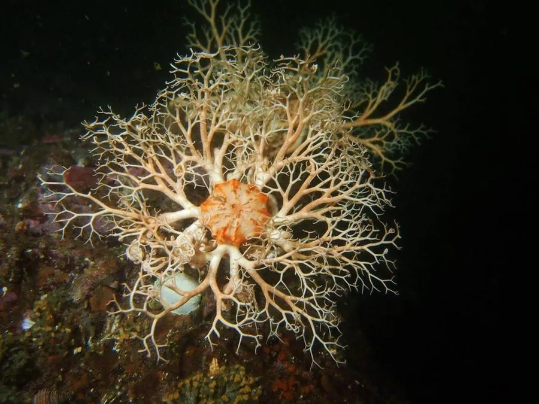

其他无脊椎动物 · 动物界
筐蛇尾 Gorgonocephalus eucnemis

腕反复分枝、展开如篮筐的深海蛇尾，夜间伸腕捕食浮游生物，栖息于冷水中，是棘皮动物中造型最奇特者之一。
- 分类
- 门棘皮动物门纲蛇尾纲目筐蛇尾目科筐蛇尾科属筐蛇尾属
- 栖息环境
- 北大西洋、北太平洋与北极的冷水海域，潮下带至水深一千米以上的岩礁与泥沙底
- 地理分布
- 北大西洋、北太平洋和北极的冷水海域
- 保护级别
- 尚无保护级别；底拖网作业与深海采矿对栖息地有潜在威胁
物种志
筐蛇尾的中央体盘直径约五至十厘米，从体盘伸出五条腕，每条腕在基部反复分枝，分成成百上千条细小的腕枝，全部展开时形成一个直径可达数十厘米的立体网篮，筐蛇尾之名由此而来。它的体表呈灰白、淡黄或褐色，腕上密布细小的钩刺和棘，能勾住浮游生物。与多数蛇尾不同，它的腕枝柔软灵活，可以弯曲缠绕。
它分布于北大西洋、北太平洋和北极的冷水海域，栖息在潮下带至水深一千米以上的岩礁和泥沙底，常附着在岩石、珊瑚或海绵上，白天蜷缩成团，夜间把腕枝完全展开，像一张张开的网，靠腕上的钩刺和黏液捕捉桡足类、端足类等浮游甲壳动物。它雌雄异体，繁殖期在夏季，幼虫浮游后变态附着。它的生长缓慢，寿命较长，是冷水底栖群落的重要成员。它尚无保护级别，底拖网作业和深海采矿对其栖息地有潜在威胁。
形态与习性
- 体盘直径约五至十厘米
- 腕五条腕反复分枝，展开成网篮状
- 腕枝成百上千条，柔软灵活，密布钩刺
- 栖息水层潮下带至水深一千米以上的冷水海底
- 食性夜间伸腕捕捉桡足类、端足类等浮游动物
- 习性白天蜷缩成团，夜间展开如网
趣味知识
- 它的五条腕能分出上千条细枝，展开后像一个立体的篮子。
- 白天它缩成一团贴在礁石上，夜里才把网张开等猎物上门。
- 它是冷水海域的居民，在热带浅海见不到它的身影。